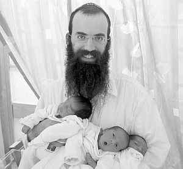

זלמן ברנשטיין
בני הזוג הרב זלמן ורעייתו שיינדי ברנשטיין, שלוחי הרבי מלך המשיח בקוצ’ין שבהודו, ציפו כמה שנים מאז נישואיהם לפרי בטן. בשלב מסוים נודע להם על דולר של הרבי שניתן לברכה עבור זרע של קיימא, אך בדרך קרו כמה אירועים ספונטניים שגרמו להם להרגיש שהנה, נפתחו צינורות השפע והברכה • לפני שבועות אחדים חבקו בני הזוג
“בני הזוג הרב זלמן ורעייתו שיינדי ברנשטיין, שלוחי הרבי מלך המשיח בקוצ’ין שבהודו, ציפו כמה שנים מאז נישואיהם לפרי בטן. בשלב מסוים נודע להם על דולר של הרבי שניתן לברכה עבור זרע של קיימא, אך בדרך קרו כמה אירועים ספונטניים שגרמו להם להרגיש שהנה, נפתחו צינורות השפע והברכה • לפני שבועות אחדים חבקו בני הזוג שלישיה • בדידי הווה עובדא מרגשת”

“החלטנו לפרסם את הסיפור הזה מתוך הכרת הטוב לרבי מלך המשיח ועל פי הוראתו הקדושה לפרסם את הניסים כחלק מזירוז הגאולה”, פותח ומספר את סיפורו המרגש הרב זלמן ברנשטיין, שליח הרבי בעיר קוצ’ין שבתת-היבשת הודו.
ר’ זלמן יחד עם רעייתו שיינדי חבקו בשבוע האחרון במזל טוב שלישיית בנים בריאים ושלמים, ושמחתם מרקיעה שחקים. יותר מארבע שנים תמימות חלפו מאז נישאו ובכל התקופה הזו היו מלאי ביטחון ואמונה שהכול עניין של זמן ותיכף יזכו בפרי בטן. אך ככל שחלפו הימים והאור לא נראה בקצה המנהרה, ההתמודדות והקושי מהלא-נודע הפכה מורכבת וקשה יותר.
מסכת של השגחות פרטיות מופלאה וברכה אחת ברורה ומדויקת מהרבי באמצעות ה’אגרות קודש’ בשמחת תורה אשתקד בבית חיינו, חוללה את המפנה עד הרגע המשמח והמאושר שהתרחש לפני ימים ספורים עם לידת הבנים.
“הרבי לא רק נתן לנו את הברכה אלא ליווה אותנו בכל צעד ושעל. על כל שאלה זכינו לקבל מענה. התחושה הייתה שהרבי נמצא איתנו בכל הלבטים ובכל התחנות בדרך אל הלידה”, אומר הרב ברנשטיין, ובקולו ניבטת נימה עזה של התרגשות. “ראינו ניסים רבים בשליחות, אך אני יכול לומר שזו הפעם הראשונה שהרגשנו באמת איך הרבי צועד איתנו יד ביד”.
הדולר הנודד
בני הזוג ברנשטיין נישאו בחורף תשס”ט. כבר בתחילה היה ברור לשניים שהם יוצאים לשליחות, ומכינים עוד נקודה בגלובוס לקבלת פני משיח. “לאחר ‘שנה ראשונה’, מלווים בברכתו של הרבי מלך המשיח, עשינו את דרכינו להודו ופתחנו בית חב”ד בעיר קוצ’ין.
“חלפו שבועות וחודשים ולא התבשרנו שהמשפחה עומדת להתרחב. האמנו שזה יגיע בקרוב, אך כשהזמן חלף ביעף וזה עדיין לא קרה, התחלנו להיכנס לשלב של בירורים ובדיקות. בכל ביקור שעשינו בארץ ישראל, קבענו תורים אצל רופאים מומחים בתחום. אמנם היו במעלה ההר לא מעט מפחי נפש, אך היינו מלאי ביטחון שכשלוחים של הרבי, לא יעזוב הרועה צאן מרעיתו והכול עניין של זמן.
לפני חג שבועות תשע”ב שמעתי סיפור מחבר על חסיד המתגורר בצפת שגם לו לא היו ילדים כמה שנים מאז נישא, והוא נסע לשמחת תורה ל-770 וקיבל דולר שהתברך מהרבי לזרעא חייא וקיימא מחסיד בקראון הייטס, וכמה מופלא שעוד באותה שנה הפך לאב מאושר. חשבתי איך אוכל להשיג את הדולר הזה כסגולה וברכה, אבל לא ידעתי מי החסיד שנתן לו את הדולר ושיערתי שהוא בטח כבר החזיר אותו.
את שמו של נותן הדולר מקראון הייטס שמעתי ממש לפני שעלינו, רעייתי ואני, על טיסה לחצרות קודשנו בחג השבועות באותה שנה. מסתבר שלאיש לא היו ילדים במשך שבע שנים מאז נישואיו, ולאחר שהתברך על ידי הרבי וקיבל שני שטרות של דולר – נולדו לו תאומים. התלהבתי והחלטתי לפגוש אותו ולבקש ממנו את אחד הדולרים.
בפועל, השהות בקראון הייטס נוצלה גם ובעיקר עבור עניני השליחות בקוצ’ין ואת אותו חסיד – הרב יוסף יצחק שפאלטר – פגשתי בהשגחה פרטית שעה קלה לפני חזרתי ארצה ברחוב הראשי – קינגסטון. סיפרתי לו עלינו ועל שליחותנו בהודו ועל ההמתנה והציפייה המתארכת לפרי בטן. בסיום דבריי ביקשתי ממנו בתחינה להפקיד אצלי לפחות שטר אחד של דולר.
הוא התרגש מאוד מסיפורי מסירות הנפש הנדרשת מאתנו במצב הזה בשליחות, וסיפר לי את סיפורו שלו. מסתבר שסב אשתו, הרה”ח ר’ חייקל חאנין, ביקש בעבורם כמה וכמה פעמים במעמדי חלוקת דולרים ובהזדמנויות שונות, אך לא זכה לברכה מפורשת, עד שבאחת השנים בל”ג בעומר – יום המסוגל – הודיע הרבי על חלוקת דולרים פתאומית. גם ר’ חייקל עבר לפני הרבי, אך שכח לבקש עבור נכדיו. באתערותא דלעילא פנה אליו הרבי ושאלו האם אינו צריך ברכה עבור נכדיו. כמובן שהוא ביקש מייד את ברכת הרבי, והרבי העניק את ברכתו בצירוף שני שטרות של דולר. ואכן בתוך שנה נולדו להם תאומים.
כאמור הוא התרגש מאוד, המציאות שלנו נגעה לו ללב, אך לצערו אמר שכעת הוא בדרך לשדה התעופה לטיסה חשובה וכי הדולר נמצא בכספת בבית ולאף אחד מבני הבית אין גישה אליה. הוא הוסיף וסיפר שהדולר הראשון נמצא עדיין בארץ ישראל אצל אותו חסיד מצפת, וכי הוא מבקש שכשאחזור לארץ ישראל אמסור לו בשמו שיעביר אלי את הדולר.
כששבנו ארצה, זה אכן הדבר הראשון שעשינו. יצרנו קשר עם אותו חסיד בצפת, אך אז נודע לנו שיש תור ארוך של חסידים שהקדימו אותנו והדולר כבר נודד בין משפחות. הצטערתי מאוד וביקשתי ממנו להוסיף אותנו לרשימת ההמתנה.
הפגישה שנדחתה בגלל התוועדות
בינתיים התקרבו חודשי החגים של שנת תשע”ג. היינו מלאי ציפייה, אך בשורה טובה עדיין לא נראתה באופק. החלטנו שמכיוון ששמחת תורה זהו זמן מסוגל לפעול ישועות למעלה מגדרי הטבע – וכפי הידוע שיום שמחת תורה הוא יום האושפיזין של הרבי – אטוס ל-770 ואבקש את ברכת הרבי. שמחת תורה באותה שנה חל בימי שני ושלישי, ונחתתי בניו יורק כמה ימים קודם לכן.
בשמיני עצרת שוב פגשתי את בהרב שפאלטר ברחובות קראון הייטס. סיפרתי לו על הדולר שמתגלגל ופועל ניסים ונפלאות אצל משפחות אנ”ש בארץ הקודש, וביקשתי אם יוכל להפקיד בידי את הדולר הנוסף, השני. ראיתי שהדבר לא קל לו, אך לבסוף הוא הבטיח לתת לי אותו וביקש שאגיע אליו לאחר שמחת תורה, וכך נפרדנו.
בליל שמיני עצרת לפני ההקפות הגענו כמאה אברכים ותמימים אל ביתו של הרב עמוס כהן אל הקידוש שלפני ההקפות. אחד הבחורים בלי הודעה מוקדמת עלה על הספסל והכריז שיש כאן שליח מהודו שנשוי כבר שלוש שנים וחצי והוא ללא ילדים וביקש שיברכו אותנו. כולם ענו ‘אמן’ ובירכו אותנו מעומק הלב. לראשונה הייתה לי תחושה טובה שאכן העניין יפעל בשמחת תורה הזה.
כשהוא עמד על הספסל ודיבר, נזכרתי שבאחת הפעמים שכתבנו לרבי על הנושא הזה, היתה תשובה לבקש מחסידים לברך בעת התוועדות חסידית וכעת חשתי שהדבר קורם עור וגידים מול עיניי. לאחר הקידוש צעדנו מתוך שמחה להקפות ב-770, וכל מי שפגשתי באותו ערב נתתי לו ‘לחיים’ וביקשתי שיברך אותנו בזרע של קיימא. חסידים בירכו אותנו בלבביות רבה. גם כאלה שמעולם לא פגשתי, הרגשתי כמה אכפת להם ממני. האהבה שחשתי באותו ערב – אין לתאר. התחושה הייתה שברכותיהם של כולם הם כברכות אחים אוהבים, אהבה כנה ופנימית כזו שיכולה לנבוט רק בין חסידים ורק ביום המסוגל הזה – שמחת תורה.
הסתובבתי נרגש ונרעד, הייתה בי תחושה של התרוממות הרוח.
למחרת שמחת תורה, ביום רביעי, הייתי אמור ללכת לרב שפאלטר ולבקש את הדולר. לפני היציאה מ-770 פגשתי את ידידי השליח בעיר ווטה קאנל שבהודו, הרב רן שמיר, ושוחחנו בינינו. הוא ‘השכן’ הכי קרוב שלי במקום השליחות, ומטבע הדברים יוצא לנו לבצע הרבה שיחות תיאומים על אנשים שעוברים משם אלינו ולהיפך. חלפו כמה דקות והנה עובר בסמוך אלינו אברך חסידי ומתחיל לשוחח עם הרב שמיר שערך מיד היכרות בנינו. אותו חסיד, משמש כמשפיע בברינואה – הרב בערל פשטר, שמו.
שיחה התפתחה בין שלושתנו, שיחת רעים, מעין התוועדות חסידית בעמידה, משהו שיכול לקרות רק ב-770. סיפרנו סיפורי השגחות והתמודדויות ממקום שליחותנו בהודו, והוא מצדו סיפר סיפורים שחווה במשך כל השנים במחיצת הרבי מלך המשיח בבית חיינו. שלוש שעות עמדנו משוחחים מבלי משים על הזמן שעובר. כשראיתי ששעת חצות כבר חלפה, החלטתי ביני לבין עצמי לדחות את ההליכה לביתו של אותו חסיד בשביל לקבל את הדולר ליום המחרת.
אמנם קצת הצטערתי על-כך; הדולר הזה היה חשוב לי ולא רציתי להחמיץ את זה, אך יחד עם זה היה ברור לי שאני לא עוזב התוועדות חסידית באמצעה.
הדולר הניסי בסוף ההתוועדות
לקראת סוף ההתוועדות המאולתרת הזו, סמוך לשעה 1 בלילה, אמר הרב פשטר, כי אמנם הוא לא פגש אותי מעולם, אך הוא מכירני היטב. איך? מכתבה שהתפרסמה אודותינו ב’בית משיח’ שנה קודם לכן. הוא סיפר שלפני התוועדות י”ט כסלו הגיע העיתון לביתו ולפני שיצא להתוועד עם תלמידי הישיבה, קרא אותה ועיקר ההתוועדות שלו נסבה על סיפורי השליחות של השלוחים בקוצ’ין.
הרב פשטר הוסיף לספר, כמשיח לפי תומו, שבאותה התוועדות בי”ט כסלו השתתף אברך שכמה שנים לא היו לו ילדים, ולו עצמו (לרב פשטר) יש מנהג לקחת בכיסו דולר שקיבל מהרבי. הוא מאמין שהדולרים שקיבל מידיו הקדושות של הרבי לא שייכים לו אלא הוא רק צינור שצריך להעביר אותם לאנשים הזקוקים לישועה. הוא נתן לאותו אברך דולר, ואכן עוד באותה שנה זכה אותו אברך לבן ראשון.
אני שומע את הדברים הללו ואני מצטמרר; הן אני נמצא באותו מצב. נזעקתי וסיפרתי לו על הציפייה שלנו זה שלוש שנים וחצי לפרי בטן. הרב פשטר התרגש מאוד, הוציא מכיסו דולר יחיד שהיה לו שם ונתן לי אותו. כמה נדהמנו שעל הדולר היה כתוב “נתקבל מתאריך י”ט בכסלו תשמ”ו”, הן זה עתה סיפר לנו על התוועדות י”ט כסלו. ההשגחה העליונה הזו מאוד עוררה אותי, הנה אני חשבתי שבגלל ההתוועדות הזאת הפסדתי דולר, והנה הרבי שולח לי דולר חלופי בצורה ניסית…
חשתי איך הרבי נותן לנו סימן מובהק שהכול יהיה בסדר. הרב פשטר, יהודי חסידי, כזה שחי כל רגע את הרבי, הסביר לי שהוא מרגיש שהדולר הזה היה אצלו רק בפיקדון כל השנים, והדריך אותי שאצייר במחשבה שכעת הרבי נתן לי את הדולר ואבקש מה שאחפוץ. ואכן, כשנפרדנו שלושתנו זה מה שעשיתי; ביקשתי מהרבי ברכה שנזכה עוד השנה להרחיב את המשפחה.
יומיים הסתובבתי נרגש, הרגשתי שהצינור נפתח, שהחסמים נעלמים ואני זוכה לברכת הרבי.
ברכה כפולה
בליל שבת, לאחר שסיימתי להגיד קריאת שמע שעל המטה ב-770, צעדתי לספרייה של ה’אגרות קודש’ וביקשתי מהרבי ברכה. ביקשתי לקבל אישור לתחושה שמלאה את לבי. לקחתי לידי את אחד הכרכים, כרך י”א, והעמוד שנפתח היה קסב. התחלתי לקרוא את הכתוב שם ועמדתי המום ומשתומם.
ולהודעתו אודות מצב זוגתו תחי’.
וכדאי היה לבדוק המזוזות בביתם (אם לא נבדקו במשך י”ב חדשים האחרונים), וכן לבדוק את התפילין שלו, וזוגתו בטח נוהגת במנהג בנות ישראל הכשרות, להפריש קודם הדלקת הנרות בכל עש”ק וערב יום טוב.
הנה השי”ת ימלא ימי הריונה כשורה ובנקל ותלד זחו”ק בעתה ובזמנה כשורה ובנקל.
מסתבר שכשהרבי מברך אזי זה נעשה באופן ברור וחד, לא רמזים ולא גימטריות. רעדתי מהתרגשות ולא ידעתי נפשי משמחה ומאושר.
הייתי סמוך ובטוח שבשנה הבאה בתאריך הזה נהיה כבר הורים.
בקוצר רוח המתנתי למוצאי שבת, נטלתי את ידיי, קיבלתי החלטה טובה וכתבתי לרבי באריכות את כל מה שעובר עלינו בארבע השנים הללו. הרגשתי שהגיעה העת לשפוך את הכול. הודיתי לרבי על הברכות וביקשתי שהכול יהיה בקלות ובנקל. לאחר מכן שלפתי מהספרייה את אחד הכרכים ופתחתי.
אני מתחיל לקרוא את התשובה ומשתומם. ממילה למילה מתחוורת לי התחושה שאני מכיר את התשובה הזו… ואכן כמה המום הייתי כשהסתכלתי על מספר הכרך, ראיתי כי זהו כרך י”א עמוד קסב, הרבי נתן לי את אותה תשובה באותו כרך ובאותו עמוד. ליותר ברור מזה לא הייתי צריך יותר. התקשרתי לאשתי וסיפרתי לה הכול בהתרגשות עצומה. הרגשתי שהרבי מרגיע אותנו שהכול יהיה בסדר.
מאותו שמחת תורה חזרתי לארץ הקודש עם ביטחון ואמונה גדולה.
הרבי נמצא איתנו, בתשובות ברורות ומעודדות
עם חזרתי לארץ ישראל לא איבדתי זמן יקר. רצתי לסופר סת”ם עם התפילין והתברר שאכן הייתה בעיה עם הבתים. בגלל מזג האוויר הלח והחם השורר בעיר שליחותנו, נוצרה בעיה בבתים והזמנתי במקומם חדשים. בינתיים גם בדקנו את המזוזות. למרבה הפלא אחת המזוזות לא הייתה במשקוף הנכון, והחלפנו אותה.
בימי ההמתנה לבתים החדשים של התפילין, דחקתי בסופר להזדרז כי הרגשתי שבזה תלויה ברכת הרבי, זהו הכלי שמחזיק ברכה.
ואכן, מיד כשהתפילין הגיעו אלינו בתחילת חודש כסלו, נודע לנו גם שהבשורה הטובה קיימת, ולאושרנו לא היה גבול. הרגשנו שהכול מתחבר כמו פאזל. יש מנהיג לבירה.
לאורך כל חודשי ההיריון הרגשנו שהרבי מלווה אותנו. בעת החודש החמישי אבי שי’ כתב בעבורנו וקיבל תשובה מדהימה בה מציין הרבי את החודש החמישי, וכותב “ובטח מבקרת אצל רופא כנהוג”. הרגשנו שכל תחנה ושלב בדרך אל הלידה, הרבי נמצא איתנו בתשובות ברורות ומדויקות כאילו נכתבו זה עתה בעבורנו. שלוש פעמים במהלך ההיריון קיבלנו תשובות ברורות ללידה קלה.
ברכה משולשת
את סיפורו המיוחד חותם הרב ברנשטיין בהתרגשות גדולה. “בשעה טובה ומוצלחת, ביום שלישי שהוכפל בו כי טוב, כ”א באלול, זכינו להתממשות ברכת הרבי מלך המשיח בעיני בשר – בלידת שלישיית בנים בריאים ושלמים”, הוא אומר בקול נשנק.
ר’ זלמן מספר סיפור זה בהרחבה, כפי הנהוג לספר מעשי ניסים, מתוך תקווה שיהיה זה פתח של תקווה ועידוד לזוגות חסידים ויהודים אחרים שנמצאים באותו מצב לבל יאבדו תקווה – יש רבי בעולם אליו ניתן לפנות ולזכות בברכות שמגשימות את עצמם.
אשרינו שחסידים אנחנו.